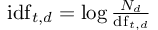

We develop many skills over time.
Unfortunately, hiring managers don't have the time, energy, or need to hear about each and every skill you've developed over your lifetime.
Standard advice for job-seekers is to keep one's resume length fixed at one page.
When it comes to choosing which skills to list on a resume it is best practice to list the skills which are closely related to the position.
This step includes reading the job description and identifying skills one has that would support this role.
Let's do better.
Objective:
Determine which terms are most relevant to a Data Scientist's resume in the New York City market.
Procedure:
$dict corpus
From WordNet (r) 3.0 (2006) [wn]:
corpus
n 2: a collection of writings; "he edited the Hemingway corpus"
Search Jobsite for target role
We're not going to use the web front-end for this.
That would take too much time.
Instead we are going to use Python's requests module to navigate.
Since it is a violation of the terms of service for many jobsites to download any content, I will use a fictitious the jobsite "infact.com" to demonstrate.
An example URL for a Data Scientist role in New York, NY could look like:
#!/usr/bin/env python3
ROLE = 'Data Scientist'
LOCATION = 'New York, NY'
URL = f'https://www.infact.com/jobs/?q={ROLE}&l={LOCATION}&sort=date'
Now we use the requests module to fetch the HTML from infact.com's server:
import requests
response = requests.get(URL)
HTML = response.text()
Since infact.com is completely fictitious, we'll imagine to have an HTML document which contains the job listings for the role and location queried sorted by date posted. Further, we can imagine this data is provided in a systematic way which links each listing to another page with a full job description. An excellent way to navigate through HTML tags is with the BeautifulSoup module. Let's make a guess that on infact.com, the job content is loaded dynamically through JavaScript. Assume that inside a <script> tag each job-listing is contained inside a dictionary-like object called 'jobmap.'
import re #for regular expressions
from bs4 import BeautifulSoup
soup = BeautifulSoup(HTML, 'html.parser')
jobmap = soup.find(text=re.compile('jobmap'))
Parse search results to find URLs of all job description HTML documents
The jobmap proably contains lots of data like a unique identifier of the role to be filled, the employer, the date posted, etc..
Let's call the unique identifier a jobkey or jk for short.
Although not incredibly challenging, this part can get pretty hacky.
With some looping, logic, and string functions, I leave it to the reader to extract the jobkeys for each job-posting.
Be creative :)
With a list or dictionary of jobkeys, we can use the requests module to fetch the HTML document which contains the full job-description.
Let's assume we have a dictionary of the following format:
jk 1 038eef0fed4b586d 2 96a3d424eb8855e1 3 faf9d0ffb3232d4f ... ... N ffffffffffffffff
Download and cache all job description HTML documents
The HTTP-request part will closely the format we used earlier.
What is different is new URLs are programatically created for each jobkey.
Also the results are being cached on the disk.
Nota bene: Caching page-content is often a violation of a webpage's TOS. Check in with the host's TOS and with your own morality before caching.
BASE_URL = 'https://www.infact.com/viewjob?jk='
for jk in jobmap['jk']:
filename = './cache/'+jk
if os.path.isfile(filename):
continue
else:
URL = BASE_URL + jk
response = request.get(URL)
with open(filename,'w') as f:
f.write(response.text)
Process the beautiful content: TF-IDF
Write some prose on tf-idf.
Count raw term frequency
The task is to break down each job-description first into sentences and then into tokens.
Once we have tokens, stop-words will be filtered out and each term will be lemmatized with it's part of speech.
Finally, uni-, bi-, and tri-grams will be created from each sentence.
Of course one could proceed with larger grams, but going much further into gram-space tends to create a sparse dataset.
NLTK is a great tool for this task and others exist.
Finally, each processed feature will be counted.
#!/usr/bin/env python3
# "process_content.py"
from nltk import pos_tag
from nltk.tokenize import sent_tokenize, RegexpTokenizer
from nltk.probability import Counter
from nltk.corpus import stopwords, wordnet
from nltk.stem import WordNetLemmatizer
from nltk.util import ngrams
tokenizer = RegexpTokenizer(r'\w+')
wnl = WordNetLemmatizer()
term_counter = Counter()
for file in files:
raw = file.read().decode('utf8')
raw = raw.lower()
sent = tokenize(raw)
words = tokenizer.tokenize(sent)
tagged_words = pos_tag(words)
filtered_words = [t for t in tagged_words if not t[0] in stop_words]
lemmas = [wnl.lemmatize(w[0], pos=convert_function(w[1])) for w in filtered_words]
for sentence in lemmas:
for num in range(1,4):
grams = ngrams(sentence, num)
term_counter.update(grams)
[ print(v) for i, v in enumerate(term_counter.items()) if i < 5 ]
The last line of the script prints out a little preview so we can be sure we're on the right track.
$./process_content.py
(('applied',), 32)
(('commercial',), 42)
(('artificial','intelligence',), 79)
(('program',), 247)
(('equal','opportunity','employer',), 105)
Count raw document frequency
We will use what we learned in the tf bit above to help us in the next part.
Namely, we now have a list of all of the features which appear in the corpus.
This list will be used to determine which features are in each document.
It is probably possible to determine document frequency at the same time as raw term frequnecy.
The added complexity probably isn't worth the efficiency.
# Given an input list of TERMS and a file, this function returns a
# list of bool for for each term.
from nltk.probability import FreqDist
def which_terms_in_doc(TERMS, FILENAME):
termsindoc= FreqDist()
with open(FILENAME, 'rb') as f:
sent = get_sentences(f)
lemmas = map(get_lemmas, sent)
termsindoc.update(get_terms(lemmas))
return list(map(lambda x: x in in termsindoc.keys(), TERMS))
There are a few locally defined functions in the snippet above. Their function is self-evident and if you're interested in their definitions please refer to my source on GitHub.
Calculations
There are a few different ways to calculate term frequency and document frequency.
The simplest is to just divide the number of occurances by the total number of values: terms or documents.
For the term frequency,
Cambridge University
suggests a modification:
For document frequency I follow a similar logarithmic treatment:

Finally, we dot the vectors together to calculate tf-idf:
Easy-peasy.
Filter & Sort
There are many terms which are specific to a single document.
Since we're attempting to learn about the role as a whole, it is prudent to filter out some of the most unique terms.
I selected all terms which appeared in at least 1/8 of the number of documents.
One day I'd like to create a Term Count vs Terms in % of Documents curve and see the shape.
For now, I guess 1/8.
df = pd.DataFrame.from_dict(term_counter)
df['doc_count'] = doc_counter
df['tf_corpus'] = list(map(logtf, df['term_count']))
df['idf'] = np.log(n_docs / df['doc_count'])
df['tf-idf_corpus'] = df['tf_corpus'] * df['idf']
# Select only terms which appear in more than 1/8 of documents
df = df[ df['doc_count'] > len(listings)/8 ]
df.sort_values(by='tf-idf_corpus',ascending=False).to_csv('./tfidf.csv')
$column -t -s, < ./tfidf.csv | head -n 50
term term_count doc_count tf_corpus idf tf-idf_corpus risk 177 47.0 6.176 2.5583 15.800 investment 100 40.0 5.605 2.719 15.244 healthcare 112 44.0 5.718 2.624 15.007 data analyst 153 52.0 6.030 2.457 14.818 medium 188 58.0 6.236 2.348 14.64 city 71 38.0 5.2626 2.7709 14.582 sale 113 49.0 5.727 2.516 14.414 agency 81 42.0 5.394 2.67 14.407 inc 70 39.0 5.248 2.7449 14.40 analytic 101 47.0 5.61 2.5583 14.36 colleague 63 39.0 5.143 2.7449 14.117 director 75 43.0 5.31 2.647 14.07 c 62 39.0 5.127 2.7449 14.073 dashboard 61 39.0 5.110 2.7449 14.029 portfolio 58 38.0 5.060 2.7709 14.02 integration 57 38.0 5.04 2.7709 13.974 associate 65 41.0 5.174 2.6949 13.944 data science team 62 40.0 5.127 2.719 13.944 senior data 78 45.0 5.356 2.6018 13.937 ml 151 60.0 6.017 2.3141 13.925 hand experience 56 38.0 5.02 2.7709 13.92 architecture 77 45.0 5.343 2.6018 13.903 operational 58 39.0 5.060 2.7449 13.890 america 55 38.0 5.007 2.7709 13.875 least 79 46.0 5.3694 2.5798 13.852 insurance 86 48.0 5.454 2.537 13.839 asset 68 43.0 5.219 2.647 13.81 natural 56 39.0 5.02 2.7449 13.794 firm 92 50.0 5.5217 2.4965 13.785 engagement 53 38.0 4.970 2.7709 13.772 science team 65 43.0 5.174 2.647 13.698 story 54 39.0 4.9889 2.7449 13.694 business intelligence 62 42.0 5.127 2.67 13.693 reporting 84 49.0 5.430 2.516 13.667 condition 67 44.0 5.204 2.624 13.658 outcome 58 41.0 5.060 2.6949 13.637 domain 55 40.0 5.007 2.719 13. care 125 59.0 5.8283 2.3309 13.585 b 49 38.0 4.891 2.7709 13.55 8 49 38.0 4.891 2.7709 13.55 enterprise 86 51.0 5.454 2.4767 13.50 influence 48 38.0 4.871 2.7709 13.497 experience use 48 38.0 4.871 2.7709 13.497 tech 74 48.0 5.30 2.537 13.458 content 84 51.0 5.430 2.4767 13.450 enhance 54 41.0 4.9889 2.6949 13.44 accommodation 95 54.0 5.553 2.419 13.437 define 70 47.0 5.248 2.5583 13.427 ai 192 71.0 6.2574 2.145 13.42 assist 56 42.0 5.02 2.67 13.422 compute 56 42.0 5.02 2.67 13.422 operate 51 40.0 4.931 2.719 13.41 track 58 43.0 5.060 2.647 13.39 may 72 48.0 5.276 2.537 13.388 employment opportunity 46 38.0 4.828 2.7709 13.379 prior 46 38.0 4.828 2.7709 13.379 applicable 55 42.0 5.007 2.67 13.373 would 50 40.0 4.912 2.719 13.358 party 50 40.0 4.912 2.719 13.358 thrive 52 41.0 4.951 2.6949 13.343 brand 132 63.0 5.882 2.2653 13.32 give 59 44.0 5.07 2.624 13.325 internal external 47 39.0 4.850 2.7449 13.313 potential 47 39.0 4.850 2.7449 13.313 use data 51 41.0 4.931 2.6949 13.291 interest 66 47.0 5.189 2.5583 13.277 federal 53 42.0 4.970 2.67 13.27 direct 53 42.0 4.970 2.67 13.27 next 44 38.0 4.7841 2.7709 13.256 social 55 43.0 5.007 2.647 13.25 love 55 43.0 5.007 2.647 13.25 characteristic 46 39.0 4.828 2.7449 13.254 guide 46 39.0 4.828 2.7449 13.254 connect 46 39.0 4.828 2.7449 13.254 business need 48 40.0 4.871 2.719 13.247 point 57 44.0 5.04 2.624 13.23 4 year 57 44.0 5.04 2.624 13.23 record 57 44.0 5.04 2.624 13.23 best practice 59 45.0 5.07 2.6018 13.211 activity 73 50.0 5.290 2.4965 13.207 ... ... ... ... ... ... work 1393 291.0 8.239 0.735 6.058
Get Smart
We've done it.
These terms may matter most when carefully choosing which characters to include on a resume.
Do have experience assessing risk?
If so, it'd be a good idea to highlight that.
Can you build a dashboard?
If not, now's a good time to learn.
The knowledge in this table is a goldmine.
If you're feeling daring, it may be assumed that you have some of the more common skills if you include the less common.
"Python" just so happens to fall 9 lines before the end of the list.